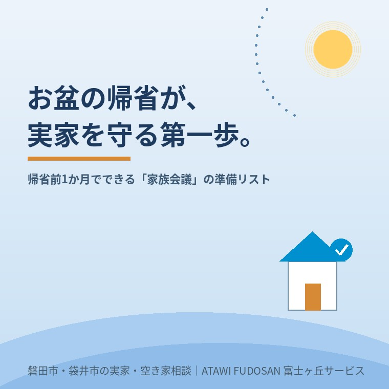

2026年7月18日｜カテゴリ：実家じまい・空き家

この記事の要点
Q. お盆に親族が集まる前、実家じまいは何から始めればいい？
A. いきなり「売る・貸す・残す」を決める前に、名義・土地建物の状況・鍵・残置物・今後の希望を整理することから始めるのがおすすめです。富士ヶ丘サービスの「ふじがおか実家カルテ」は、その家族会議のたたき台として使えます。
お盆は、ふだん離れて暮らす親族が顔を合わせる数少ない機会です。だからこそ、実家のことを話すにはよいタイミングです。ただし、いきなり「この家、売るの？」「誰が管理するの？」「荷物はどうするの？」と始めると、感情的になったり、結論が出ないまま終わったりしがちです。そこで、お盆前におすすめしたいのが、ふじがおか実家カルテを用意しておくことです。
実家には、思い出があります。仏壇、写真、家具、親が使っていた道具、庭木、近所付き合い。簡単に「売ればいい」「片付ければいい」とは言えません。
一方で、不動産として見ると、確認しなければいけないこともあります。
この「気持ち」と「現実」を分けて整理しないと、家族会議はなかなか前に進みません。
ふじがおか実家カルテは、実家や空き家について、最初に確認しておきたい情報を整理するためのサービスです。売却するかどうかを今すぐ決めるためのものではありません。
むしろ、使い方としてはこうです。
この家について、今わかっていることを家族で共有する。
そのための資料として使ってください。お盆前にカルテを用意しておけば、親族が集まったときに「名義はこうなっている」「建物はこの状態」「売るなら先にここを確認したい」「残すなら管理担当を決めないといけない」というように、感情論だけでなく、具体的な話ができます。
まずは、実家や空き家の所在地をもとに、カルテ作成を申し込みます。必要なのは、基本的には住所を送っていただくことです。謄本や公図などを確認することで、家族だけでは見落としやすい名義・土地・建物の基本情報を整理できます。
カルテは、自分ひとりで読むだけではなく、きょうだいや親族と共有する前提で使うのがおすすめです。「誰かを説得する資料」ではなく、同じ情報を見ながら話すための資料として使ってください。
最初の家族会議で、売却・賃貸・解体・保有まで一気に決める必要はありません。まずは、次のようなことを決めるだけでも大きな前進です。
| 家族会議で決めたいこと | 話し合いの例 |
|---|---|
| 窓口役 | 不動産会社や司法書士、市役所と連絡を取る人を一人決める。 |
| 鍵の管理 | 誰が鍵を持っているか、合鍵がどこにあるかを確認する。 |
| 荷物の確認 | 仏壇・写真・重要書類・処分できないものを分ける日程を決める。 |
| 名義の確認 | 相続登記が必要か、誰に相談するかを決める。 |
| 今後の選択肢 | 売却、賃貸、解体、しばらく管理のどれを検討するか整理する。 |
ふじがおか実家カルテは、売却を決めている方だけのものではありません。むしろ、次のような段階の方にこそ向いています。
不動産の話は、後回しにすると複雑になります。でも、早めに整理すれば、選択肢は残せます。
カルテでは、価格査定の前に、売却や活用の支障になりやすい項目を確認します。たとえば、名義、相続登記、境界、接道、農地、未登記建物などです。価格を出す査定ではありませんので、「すぐ売ってください」という営業のための資料ではありません。
家族会議で使うなら、カルテの読み方は次のように考えると分かりやすいです。
| カルテで見るところ | 家族会議での使い方 |
|---|---|
| 名義・相続登記 | 誰の名義になっているかを全員で確認し、必要なら専門家に相談する。 |
| 土地・道路・境界 | 売るときに先に整理すべき支障がないかを見る。 |
| 建物の情報 | 使い続ける、貸す、解体する、売るといった方向性を考える材料にする。 |
| 注意点 | 次に誰が何を調べるか、家族で役割分担する。 |
実家じまいは、家を片付ける話であると同時に、家族の気持ちを整理する話でもあります。だからこそ、いきなり結論を出すのではなく、まずは事実を整理することから始めてください。
富士ヶ丘サービスでは、磐田市・袋井市周辺の実家じまい、相続、空き家相談をお受けしています。お盆に親族が集まる前に、ふじがおか実家カルテを家族会議のたたき台としてご活用ください。
ふじがおか実家カルテ｜作成料0円・実費1,000円前後のみ
家族会議の前に、実家の状態を1枚に。
名義・相続登記・境界・接道・農地など、売る前に支障になりやすいことを宅建士が机上調査し、カルテにまとめます。価格査定ではありません。強引な売却営業も行いません。
対応エリア：磐田市・袋井市・掛川市・森町・浜松市一部｜富士ヶ丘サービス株式会社（静岡県知事 (2) 第14083号）
本記事は2026年7月18日時点の情報をもとに作成しています。登記・税務・相続手続きの個別判断は、司法書士・税理士・行政窓口などの専門家へご確認ください。
磐田市・袋井市の実家じまい・相続空き家相談
固定資産税通知書だけでも相談できます
住所があいまいでも、通知書や写真から名義・道路・農地・残置物の確認順を整理します。カルテ申込またはLINEで状況を送ってください。
富士ヶ丘サービス株式会社／静岡県磐田市見付5789番地1／TEL:0538-31-3308／静岡県知事 (2) 第14083号／http://www.fujigaoka-service.co.jp/／公益社団法人 全日本不動産協会／公益社団法人 不動産保証協会／公正取引協議会加盟事業者